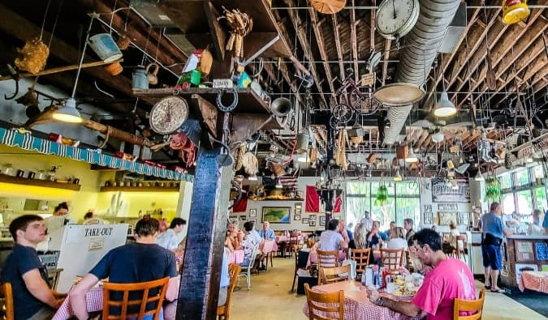
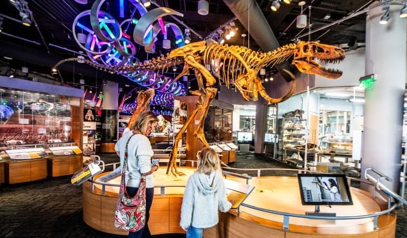
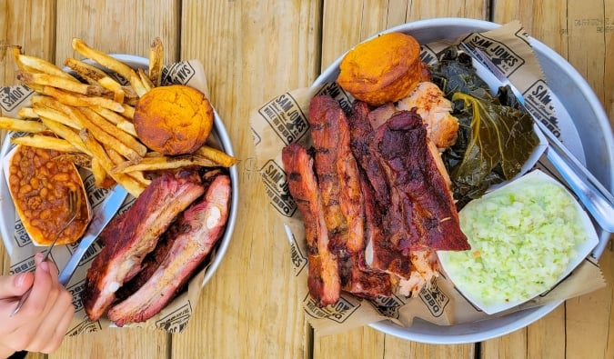
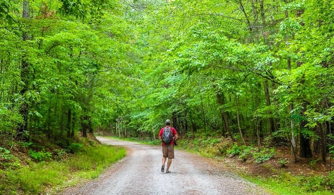
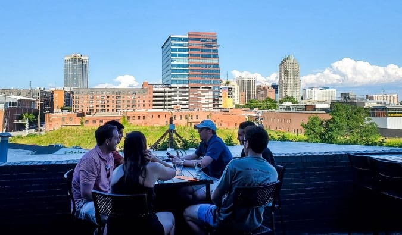

HOW TO SPEND 24 HOURS IN RALEIGH, NORTH CAROLINA
published on : January 5, 2024
I have called Raleigh, North Carolina, home for over 10 years. As one of the South’s most vibrant and eclectic burgs, this state capital might be one of the fastest-growing midsize cities in the US. It regularly tops the “best places to live and work in the US,” but it still offers small-town charm and Southern hospitality. My wife and I decided to raise our kids here because of this mix.Nicknamed “the City of Oaks” for the sheer number of majestic oak trees that line the streets, besides offering ample green spaces and trails, Raleigh is home to excellent museums, a thriving restaurant scene, endless craft breweries, fun festivals and events, and college-town vibes!visitors stop in Raleigh as part of a road trip or for work and thus don’t always have a lot of time to fully explore it. However, even if you just have one day, you can still see a lot.
Below is my personal guide to the best things to do in one day.
Breakfast: Big Ed’s City Market
There’s no better Southern breakfast and introduction to Raleigh than at Big Ed’s in historic City Market, serving generous portions of Southern comfort food since 1958.you’ll enjoy a laid-back vibe under a collection of funky antiques hanging from the ceiling, along with warm Southern hospitality and food like Grandma used to make. Especially popular are their giant pancakes, local country ham, fried chicken, aged rib-eye steak and eggs, sliced pork loin, fried catfish, fluffy biscuits, and double-brewed sweet tea. This is the local experience you’re looking for.
Morning activity: Museums
After filling up on a hearty meal, take in a museum. Raleigh has some excellent ones, and because of the quality and number of free museums it has, the city has often been referred to as “the Smithsonian of the South.”e fantastic Museum of Natural Sciences is North Carolina’s most visited museum. There are over four floors of exhibits to explore, including live animals, walk-through dioramas, microbes, meteorites, and 3D movies, plus a terrific permanent collection of dinosaur and whale skeletons.If history is your thing, across the street is the North Carolina Museum of History. Founded in 1902, it welcomes more than 400,000 visitors a year to see its 150,000 artifacts from over 14,000 years of history.Art lovers should head to the free North Carolina Museum of Art, home to more than a dozen beautiful gallery spaces showcasing art from around the world. You can explore on your own, take an engaging tour, or see some performing arts. Don’t miss taking a stroll through the 164-acre Ann and Jim Goodnight Museum Park, whose trail system through natural areas features more than a dozen commissioned works of art.
Lunch: The Pit Authentic BBQ
North Carolina is a big barbecue state, and enjoying a plate is something they take very seriously in the state capital. It’s one of those “welcome to the South” moments all meat eaters should experience. Raleigh, they mainly do Eastern-style barbecue, in which the whole hog is slow-cooked over hot coals; the meat is then pulled, given a little chop, and dressed with a vinegar-based sauce. Typically, it’s served as a sandwich or a plated dish, with all the traditional Southern sides you can handle.The Pit Authentic BBQ is one of the most popular such spots in Raleigh. As the name suggests, it proudly serves authentic whole-hog, pit-cooked, Eastern-style barbecue. Located in the Warehouse District, it’s well known for baby back ribs and whole-hog chopped barbecue. And for sides, check out the Brunswick stew, heirloom cabbage collards, and fried green tomatoes.Famous in NC, Sam Jones BBQ in downtown is another excellent option. It smokes whole hogs on-site every day and is popular for its chopped barbecue, fried chicken, ribs, and baked flat cornbread. It also serves one of my favorite sandwiches in Raleigh, the smoked turkey!If pork barbecue is not your thing but you still want a Southern dining experience, Beasley’s Chicken + Honey is a popular lunch restaurant by famed chef Ashley Christensen that specializes in fried chicken and sandwiches.
Afternoon activity: Umstead State Park
Time to walk off lunch! Just a 15-minute drive from downtown is one of the most popular destinations in Raleigh, and one of North Carolina’s most visited state parks: William B. Umstead State Park, which is easily accessible from Interstate 40 and US-70. Its more than 5,000 acres of forest surround three man-made lakes and contain over 22 miles of trails, ranging from easy to moderate. If you love nature trails, biking, running, picnicking, canoeing, or even horseback riding, put Umstead on your itinerary.A great introductory trail is the 2.8-mile Sal’s Branch Trail loop, which is mostly shaded and flat, with tall trees and a lake view. If you’re up for a woodland walk, the Sycamore Trail is a 7.2-mile loop and the longest trail. Another popular trail is the six-mile Company Mill Trail loop.Alternatively, Lake Johnson, just a 10-minute drive from downtown, is my favorite of the lakes in Raleigh. The three-mile paved greenway loop around the western side is popular with NC State students and locals. There’s a 700-foot-long boardwalk across the center of the lake, a boathouse, a small beach area, and picnic shelters.
Pre-dinner drinks: Wye Hill Kitchen & Brewing
The best view of the Raleigh skyline can be had from Wye Hill and its outstanding outdoor patio. Take it all in while enjoying refreshing craft beers and unique cocktails. There’s an excellent small-plate menu too!Whiskey enthusiasts can head to the beautiful open space and hip venue Whiskey Kitchen, featuring a repurposed industrial vibe in which to enjoy any of over 300 whiskies, plus craft cocktails, beer, and wine. Speaking of wine, Vita Vite Art Gallery + Wine Bar doubles as an art gallery and offers a great selection of wine in a classy and relaxed atmosphere.